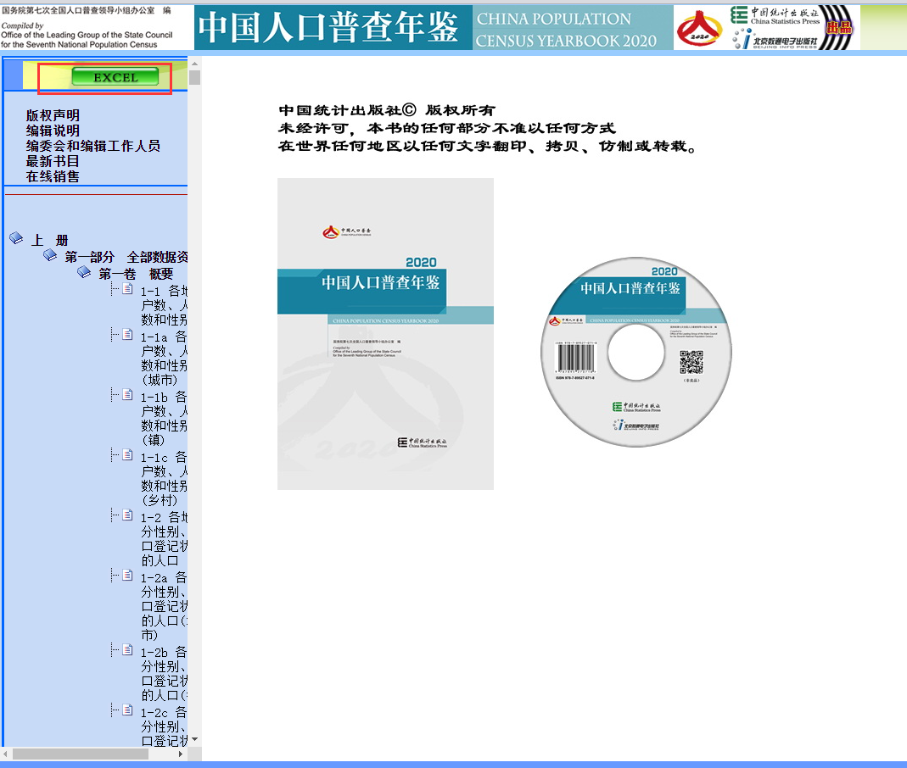

一、安装QGIS软件
我们的课程会用到QGIS软件，QGIS是一个跨平台的免费和开源桌面地理信息系统 (GIS) 应用程序，提供数据查看、编辑和分析。如果已经下载安装可跳过此部分教程，软件可以通过QGIS官网（点击进入），获取对应的Windows或 macOS 操作系统的QGIS 3.X版本。右上角可以选择中文显示，点击即可下载。
PC平台下的安装
首先下载相应的32位或者64位的版本：
32位版QGIS 3.22
64位版QGIS 3.22
可以在Windows界面的“开始-->控制-->系统”中查看自己电脑的安装版本信息，启动安装保持默认设置即可。
Mac平台下的安装
选择正确的版本，下载安装包，打开安装包，安装其中的qgis-macos-ltr.dmg，将QGIS3.22.app拖拽进应用文件夹，QGIS会出现在你的应用文件夹中。
对于Mac 用户的一些注意事项：
如果你设置了比较高得安全级别，可能会出现如下信息框：
你需要调整你得安全等级设置，如下：
在“安全和隐私”中选择设置 “任何”

二、QGIS 基本界面介绍
双击图标启动软件，显示下图基本界面，包含主菜单、工具栏、地图视图区域、图层区域、资源管理器和状态栏。
1.主菜单：包含了很多的子项操作内容，同样的内容也可以在工具栏和快捷按钮中找到。
2.工具栏：包含了一些常用的QGIS工具，这个工具栏可以根据使用者需要个性化调整，也可以根据个人操作习惯调整工具栏的固定位置。如果不小心关闭了工具栏，可以通过右键鼠标选择调出工具栏（Mac平台下是通过 ctrl +
调出）。
3.地图视图区域：可以实时看到各项操作后的地图显示结果。
4.图层区域：这里显示所有加载到地图视图区域的图层，可以控制图层的显示和编辑图层名称属性和所有与图层相关的操作。
5.资源管理器：对应你的电脑的文件系统，你也可以用这个管理器直接打开图层文件。
6.状态栏：这里显示地图视图区域的实时位置，范围和角度，以及相应坐标系的信息。
你也可以将鼠标悬停在界面按钮上会有相关描述，或者寻求help看具体的功能描述。
调整为中文环境：
你可以在全英文环境下运行，QGIS也提供自带中文翻译，涵盖了大多数的功能。在主菜单中选择“Settings--> Options --> General” 点击勾选 “Overriding System
Locale”，将“User interface translation”选择为“简体中文”点击确定，忽略提示，退出重新启动QGIS，就进入中文界面。
三、准备数据资料
为了创建全国第七次人口普查民族分布图，我们将使用以下数据资料：
1. 地图数据资料可以从阿里云数据可视化平台获取，选择所需要的行政区划范围，选择数据格式中的其他类型，点击下载。
2. 第七次人口普查数据可以通过国家统计局的人口普查数据库获取，
选择Excel，找到需要下载的数据资料，点击下载。

3. 其他可以下载数据资料的网站如规划云等，也可以下载相关GIS数据资料。
本次教程所需的相关数据资料可以在此处直接下载数据资料包。
四、制作全国七普民族分布图
第一步，添加图层，打开QGIS软件，从主菜单点击“图层--> 添加图层 --> 添加矢量图层” 或者从左侧快捷菜单点击第一个添加图层按钮。
选择下载data文件夹的位置，打开“SHP”文件夹中的“中华人民共和国”文件夹选择province.shp文件打开，点击“添加”。
第二步，加载数据，从主菜单点击“图层--> 添加图层 --> 添加分隔文本图层” 或者从左侧快捷菜单点击第四个添加图层按钮。
选择下载data文件夹的位置，打开“csv”文件夹中的“Ethnic.csv”文件，点击“添加”。
第三步，将数据信息添加到地图图层中，在图层栏双击“province”图层，选择图层属性中的“连接”，点击下部的“+”，出现添加适量连接的对话框。可以看到连接图层自动选择为“Ethnic”连接字段为“ID”，我们将目标字段也改为“ID”，勾选连接字段，选择需要添加到地图图层中的数据，本次将所有民族字段和“Max”“Maxname”字段都勾选，点击确定,再点击应用。。
观察数据，在图层栏province”图层右键，选择“打开属性表”，可以看到之前只有“name”“center”“level”“ID”四栏增加了所有民族信息。我们将七普的民族数据资料按照省市行政区域加载成功。
第四步 制作少数民族最大人口分布图，根据已有的每个省市行政区域人口最多的少数民族，制作相关地理分布图。图层栏双击“province”图层，选择图层属性中的“符号化”，点击第一行将“单一符号”改为“分类”，第二行“值”选择为“Ethinic_Maxname”，再点击下部“分类”按钮，就会出现民族及其对应颜色，可以点击单个颜色块，再点击“符号-->简单填充-->选择填充颜色”调整色块颜色。点击确定后，可以看到少数民族最大人口按照不同颜色的分布图。
第五步 打印输出，从主菜单选择“工程-->新建打印布局”或者工具栏选择第四个按钮，或者ctrl+p。编辑打印布局名称“七普民族分布图”，在打印布局中，点击“添加地图”，框选布局，出现地区视图区域内容，调整右侧“项属性”栏中的比例为35000000，CRS使用EPSG：3857 – WGS 84。

下一步，添加标题，图例和比例尺，分别选择左侧“添加标注”“添加图例”和“添加比例尺”按钮，选择合适的位置放置，需要编辑“标注”和“图例”。先“图例”，编辑点击图例右键选择“项属性”，右侧属性栏中的图例项，取消“自动更新”，点击下拉province，显示所有图例内容。选择需要去除的图里内容，点击下部”-“可以不在图例中显示，也可点击内容右键选择“隐藏”。然后在主要属性中输入标题“图例”。
回到“项”选择文字图层，在“主要属性”中输入标题“全国第七次人口普查民族分布图”，在“外观-->字体”点击右侧箭头，选择字号“20”pt，调整字体大小。
最后选择导出图像格式，可以选择jpg格式，也可以是pdf格式。